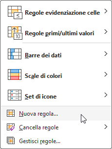

Formattazione Condizionale
La formattazione condizionale in Excel consente di applicare automaticamente stili di formattazione (come colori delle celle, stili di carattere o bordi) alle celle in base a determinate condizioni o criteri specifici. Ecco i passaggi per eseguire una formattazione condizionale in Excel:
Passaggi per eseguire la formattazione condizionale in Excel
Seleziona le celle da formattare:
- Evidenzia l’intervallo di celle su cui vuoi applicare la formattazione condizionale. Ad esempio, se vuoi applicarla a un elenco di valori numerici, seleziona l’intervallo come A1
Apri il menu di formattazione condizionale:
Vai alla scheda Home della barra multifunzione.
Nel gruppo Stili, clicca su Formattazione condizionale.
Scegli il tipo di regola: Dal menu a discesa della formattazione condizionale, puoi scegliere diversi tipi di regole in base alle tue esigenze:
Regole predefinite:
Evidenzia regole celle: Usa questa opzione per applicare la formattazione a celle che soddisfano una condizione come “maggiore di”, “minore di”, “tra”, “testo che contiene”, ecc.
Barre dati: Applica barre colorate all’interno delle celle per rappresentare i valori numerici.
Scale di colori: Applica diverse sfumature di colori in base ai valori delle celle.
Set di icone: Applica icone (frecce, segni di spunta, semafori) per rappresentare i valori delle celle rispetto a una scala di valori.
Nuova regola: Clicca su Nuova regola per creare condizioni personalizzate. Ad esempio, puoi applicare una formattazione basata su formule specifiche.

Definisci il criterio di formattazione: Selezionando una delle opzioni predefinite, potrai impostare le condizioni. Ad esempio, se scegli “Maggiore di”, inserisci il valore di riferimento nella casella, ad esempio 50, per formattare tutte le celle che contengono un valore superiore a 50.
Esempio: Se scegli Evidenzia regole celle > Maggiore di…, puoi inserire il numero 50 e poi scegliere uno stile di formattazione come il riempimento rosso chiaro con testo rosso scuro.
Scegli uno stile di formattazione:
- Seleziona lo stile che desideri applicare alle celle che soddisfano la condizione. Puoi scegliere tra colori di riempimento, colori del testo o bordi, oppure personalizzare lo stile cliccando su Formato personalizzato.
Applica la regola:
- Dopo aver configurato la regola, clicca su OK per applicare la formattazione condizionale alle celle selezionate.
Ecco un esempio di come usare la formattazione condizionale in Excel per un’analisi del sangue. Supponiamo che tu abbia un foglio con i risultati di vari esami del sangue per diversi pazienti, e vuoi evidenziare i risultati che sono al di fuori dei range normali per facilitare l’identificazione di valori critici.
Esempio di analisi del sangue
| Paziente | Emoglobina (g/dL) | Colesterolo (mg/dL) | Glucosio (mg/dL) |
|---|---|---|---|
| Mario Rossi | 12.5 | 180 | 95 |
| Anna Verdi | 14.8 | 240 | 110 |
| Luca Blu | 11.2 | 170 | 160 |
| Giulia Gialli | 13.6 | 220 | 85 |
Obiettivo:
Evidenziare i valori:
Emoglobina al di fuori del range normale (tra 12 e 16 g/dL).
Colesterolo superiore a 200 mg/dL (indica colesterolo alto).
Glucosio superiore a 100 mg/dL (indica glicemia alta).
Passaggi per applicare la formattazione condizionale:
1. Formattazione per l’emoglobina fuori dal range normale
Vogliamo evidenziare in rosso i valori di Emoglobina che sono al di sotto di 12 g/dL o al di sopra di 16 g/dL.
Seleziona l’intervallo delle celle che contiene i valori dell’emoglobina (es. B2
).
Vai su Home > Formattazione condizionale > Nuova regola.
Clicca su Utilizza una formula per determinare le celle da formattare.
Inserisci la seguente formula per evidenziare i valori inferiori a 12 o superiori a 16:
=O(B2<12, B2>16)
Clicca su Formato… e scegli un riempimento rosso o un colore di testo rosso per evidenziare i valori fuori range.
Clicca su OK per applicare la regola.
2. Formattazione per il colesterolo alto
Vogliamo evidenziare in giallo i valori di Colesterolo superiori a 200 mg/dL.
Seleziona l’intervallo delle celle con i valori del colesterolo (es. C2).
Vai su Home > Formattazione condizionale > Evidenzia regole celle > Maggiore di….
Nella finestra che si apre, inserisci 200 come valore.
Seleziona uno stile di formattazione predefinito o clicca su Formato personalizzato e scegli un riempimento giallo.
Clicca su OK.
3. Formattazione per il glucosio alto
Vogliamo evidenziare in arancione i valori di Glucosio superiori a 100 mg/dL.
Seleziona l’intervallo delle celle con i valori del glucosio (es. D2).
Vai su Home > Formattazione condizionale > Evidenzia regole celle > Maggiore di….
Inserisci 100 come valore.
Seleziona uno stile di formattazione con riempimento arancione per i valori che superano il limite.
Clicca su OK.
Risultato finale:
Dopo aver applicato queste regole, la tabella potrebbe apparire così:
Interpretazione:
I valori di Anna Verdi e Luca Blu sono evidenziati per il colesterolo e il glucosio elevati, rispettivamente in ciano e arancione.
Il valore dell’emoglobina di Luca Blu è evidenziato in rosso poiché è inferiore al valore normale di 12 g/dL.
In questo modo, è facile individuare rapidamente i pazienti con valori critici, consentendo un’analisi più efficiente e una migliore gestione clinica.